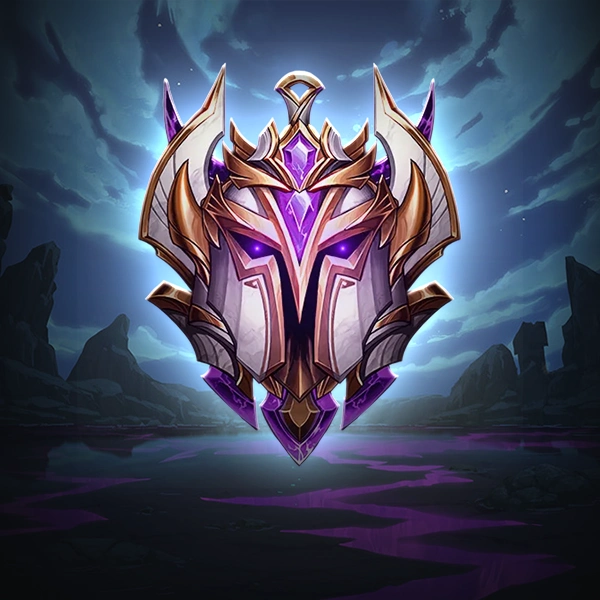

ABOUT ME
My name is Christiaan (HellsDevil) and I am a League of Legends: Wild Rift coach and multiseason Challenger player across all roles. With years of experience in high-level play and analysis, I’m here to help you achieve your best in Wild Rift.

I’ve not only mastered every role in the game but also served as an analyst for major tournaments (including Wild Rift Worlds). This experience gives me unique insights into both individual skills and team-based strategies at the highest levels of play.
Over the years, I’ve had the privilege of helping dozens of players climb ranks, from beginner levels to advanced tiers. My coaching is all about tailoring sessions to your needs, whether it’s honing mechanics, improving game sense, or mastering rank-up strategies. Each session, I provide actionable feedback to help you level up fast and confidently.
